Gnuplot 绘图第四弹-调整刻度
Table of Contents
现在，我们已经能够使用 Gnuplot 绘制出自己想要的图形，接下来在第四弹中，我们将对 刻度进行更细致的调整。
1 启用副刻度
set sample 500 set grid # x 轴每个主刻度拥有 4 个副刻度 set mxtics 4 # y 轴每个主刻度拥有 2 个副刻度 set mytics 2 plot [0:2*pi] sin(12*x)*exp(-x/4)
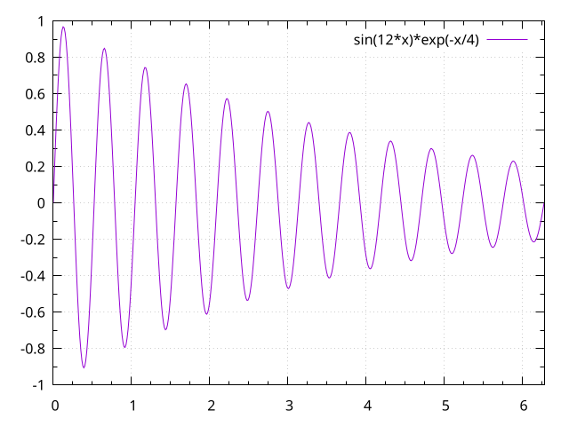
2 第二坐标轴上的刻度
set ytics nomirror # y2 主刻度的间距是 0.4 set y2tics 0.4 set my2tics 4 set xtics pi/4. set mxtics 4 set grid plot [0:2*pi] sin(x) axis x1y1, 2*cos(8*x)*exp(-x) axis x1y2
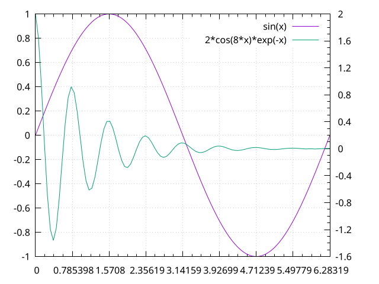
3 调整刻度的长度
# 将主刻度的长度调整至默认值的 3 倍。如果没有特殊指定，副刻度的长度是主刻度的一 # 半，可通过 =set tics scale a, b 同时调整主副刻度的长度 set tics scale 3 set mxtics 4 set mytics 4 plot [0:4*pi] sin(x)/x notitle
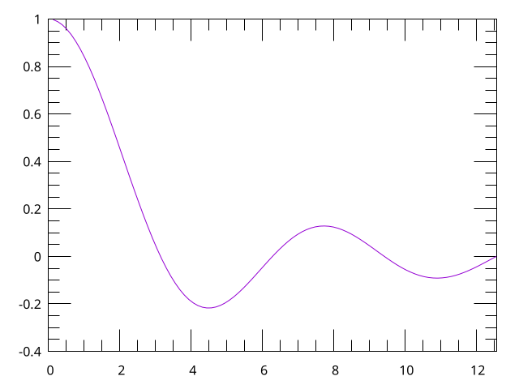
4 移除所有的刻度
# Gnuplot 中有两种表达方式，=unset tics= 和 =set notics= 等价 # 同样地，=unset border= 也和 =set noborder= 等价 unset tics plot [0:2*pi] x**2*sin(x)
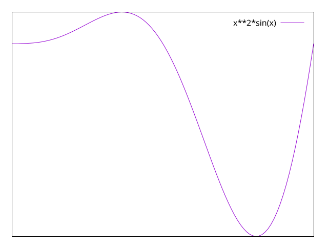
5 精细调整刻度值
set size ratio 1 # 设置极坐标 set polar # 按坐标系的位置设置坐标轴，并关闭副轴 set xtics axis nomirror set ytics axis nomirror set zeroaxis unset border set border polar unset key set samples 500 set grid set rrange [0:11] # 关闭笛卡尔坐标系下 x, y 轴刻度 unset xtics unset ytics # 设置极坐标系下的 r 和 t 轴，其中三个数字分别表示起始，间隔和终点 set rtics 0,2,10 set ttics 30 plot [0:2*pi] 4*(1-sin(t))

6 刻度朝外
set tics out set grid plot [-3:3] tanh(x)
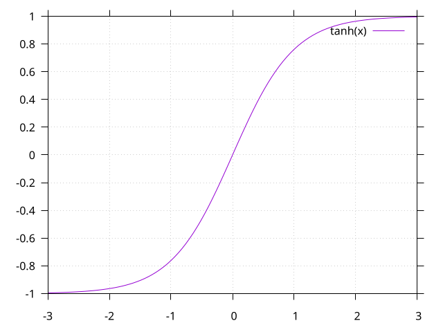
7 手动设置刻度标签
set xtics ("{/Symbol p}" pi, "{/Symbol p}/2" pi/2,\ "2{/Symbol p}" 2*pi, "3{/Symbol p}/2" 3*pi/2, "0" 0) # add 关键字用于添加标签 set xtics add ("3{/Symbol p}/4" pi*3/4) plot [0:2*pi] sin(x)
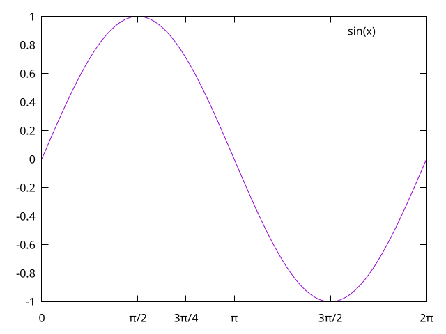
8 时间和日期标签
| 1/1/2011 | 72.1 |
| 1/3/2011 | 12.2 |
| 1/9/2011 | 9.8 |
| 1/1/2012 | 73.5 |
| 1/3/2012 | 63 |
| 1/7/2012 | 58.9 |
# 告诉 Gnuplot x 轴的数据是时间 set xdata time # 又什么格式解析数据中的时间 set timefmt "%d/%m/%Y %H:%M" # x 轴标签的输出格式 set format x "%d/%m/%y" # 旋转 xtics -30 度 set xtics rotate by -30 set rmargin 7 plot data using 1:2 with linespoints notitle
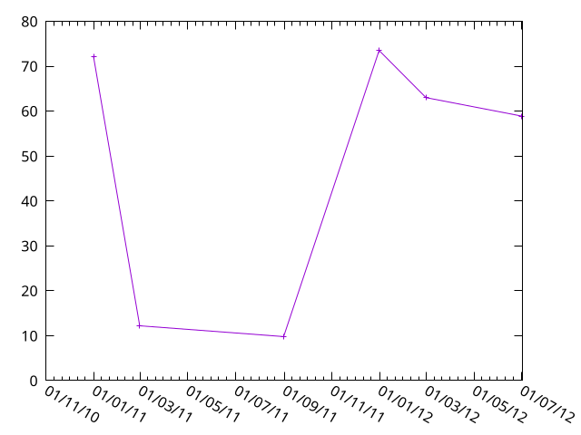
9 在时间标签中启用地域设置
# 告诉 Gnuplot x 轴的数据是时间 set xdata time # 启用地域设置 set locale "zh_CN.utf8" # 又什么格式解析数据中的时间 set timefmt "%d/%m/%Y %H:%M" # x 轴标签的输出格式 set format x "%Y年%b" set xtics rotate by -30 set rmargin 8 plot data using 1:2 with linespoints notitle
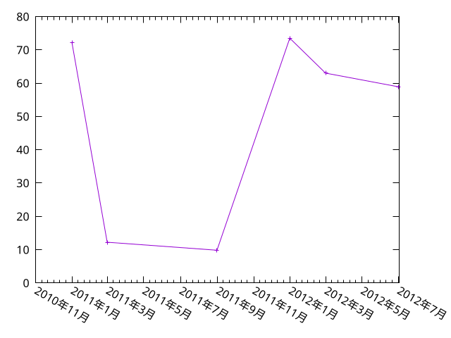
10 设置不同地域的数字格式
此处本来应该用 set decimalsign locale "es_ES.utf8" 来做演示才能看出区别，但是不
知为什么我的电脑上好像只有 "en_US.utf8" 和 "zh_CN.utf8" 可用，可能是我在系统中只
开启了这两个编码。
set decimalsign locale "zh_CN.utf8" # 手动设置数字分隔符 set decimalsign "|" plot [0:1] x**3 notitle
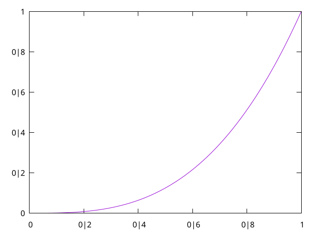
11 格式化刻度标签
set ylabel "Output power" set format y "P = %.2f Watts" set format x "%.3f%%" # Axes 的右侧与 Canvas 的右侧间距 6 个字符宽度，防止最后一个标签跑到外面去 set rmargin 6 plot [0:100] x**2 notitle
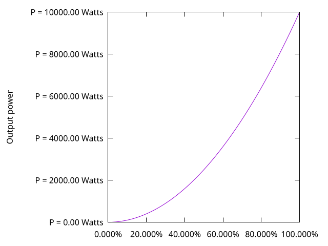
这里有个小技巧，我们可以通过 format 的方式隐藏所有的标签
set format y "" set format x "" unset key set grid plot x, -x
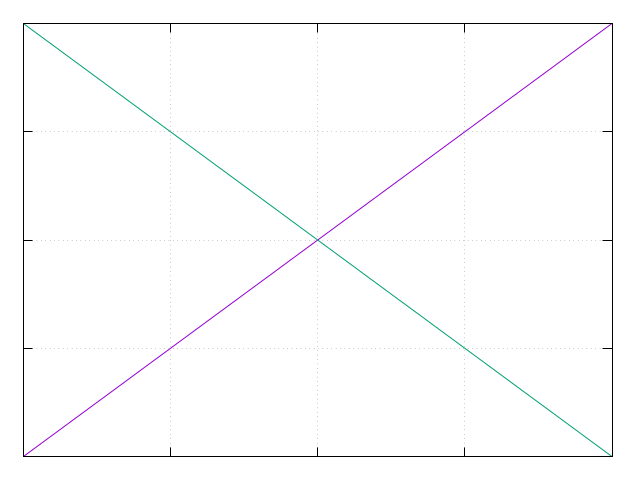